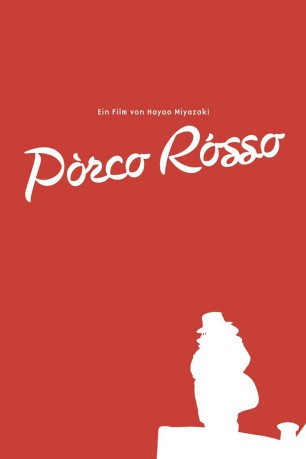

#2003 Porco Rosso
 
 IMDB-Wertung: 7.8 / 10
IMDB-Wertung: 7.8 / 10  Metascore: 83
Metascore: 83 
Fantasievoller Animationsfilm von Hayao Miyazaki aus dem Jahr 1992. Italien gegen Ende der 20er Jahre. Vor einiger Zeit noch war der Kampfpilot Marco Paggot ein gefeierter Kriegsheld. Nachdem er das Militär verlassen hatte, verwandelte sich Marco in ein Schwein und wird seitdem Porco Rosso genannt. Als die Faschisten auf dem Vormarsch sind, muss er nun wieder sein Können unter Beweis stellen.
Jahr: 1992
Dauer: 94 Minuten
FSK: 6
Land: Japan Studio: UFATonspuren:
Untertitel:
Auflösung: 1080p (1920x1040) Größe: 6543 MB
Genre: Animation/Trick, Abenteuer, Fantasy, Liebe
Regisseur: Hayao Miyazaki
Drehbuch: Hayao Miyazaki
Soundtrack: Joe Hisaishi
Darsteller:
Datei: X:\Kinder Anime\Studio Ghibli\Porco Rosso (1992, FSK6, 1920x1040).mkv seit 21.09.2015
Festplatte: Kinder-Filme+Trick
 Es gibt insgesamt 27 Filme in der Gruppe 'Kinder Anime\Studio Ghibli'
Es gibt insgesamt 27 Filme in der Gruppe 'Kinder Anime\Studio Ghibli'